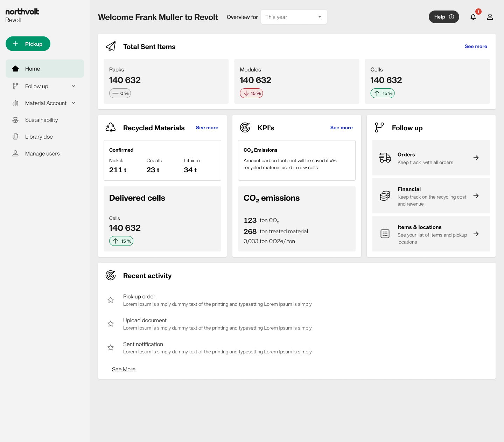
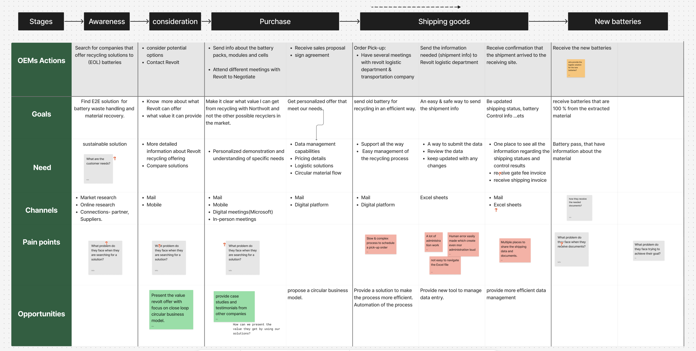
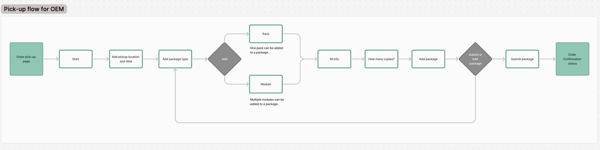
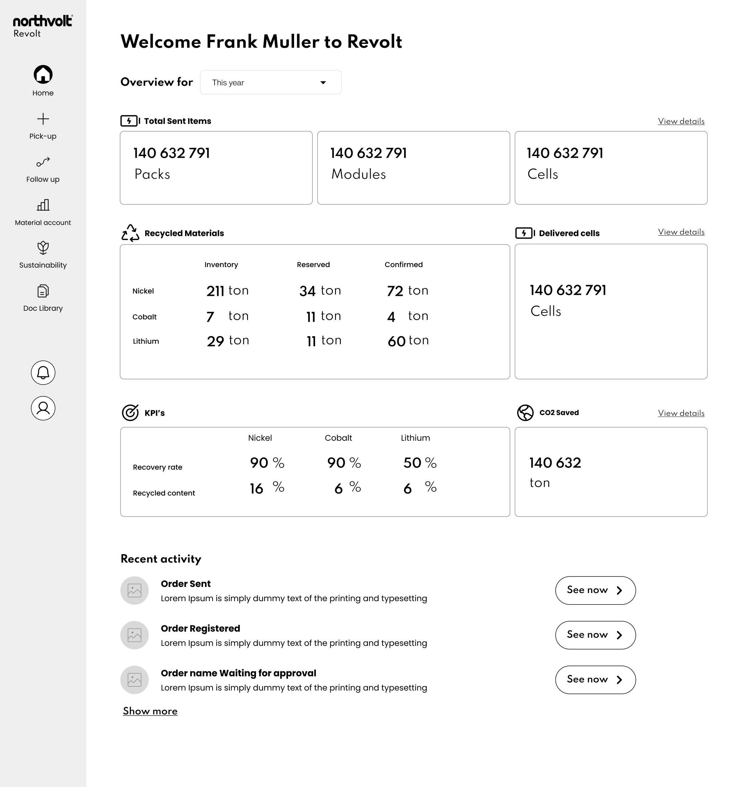
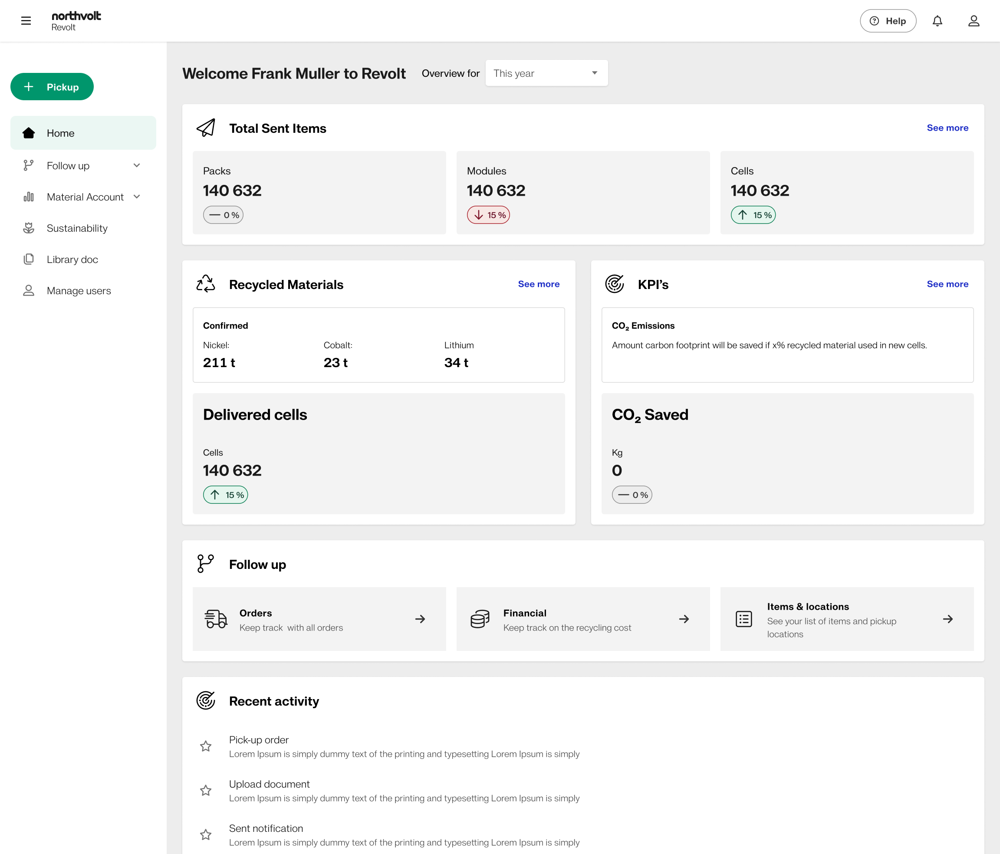
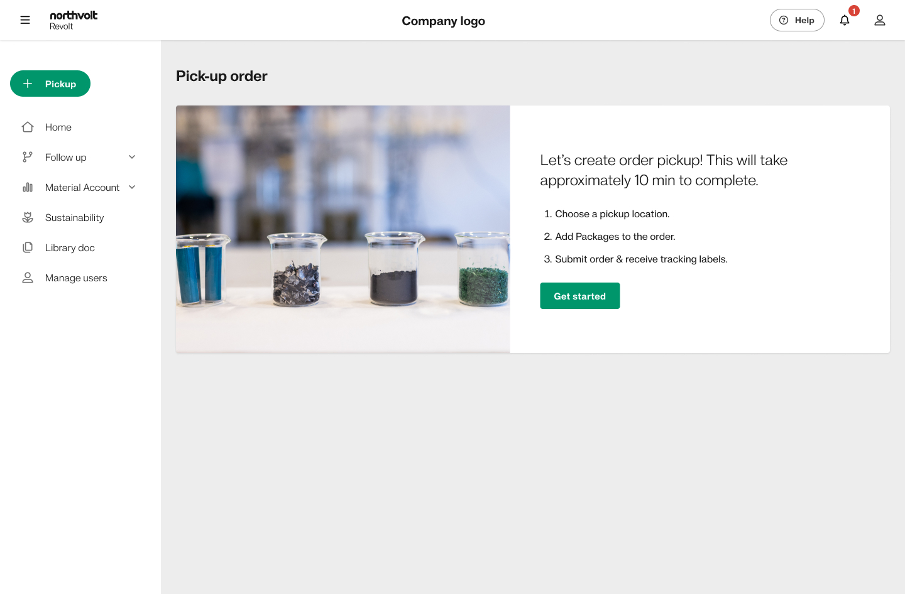
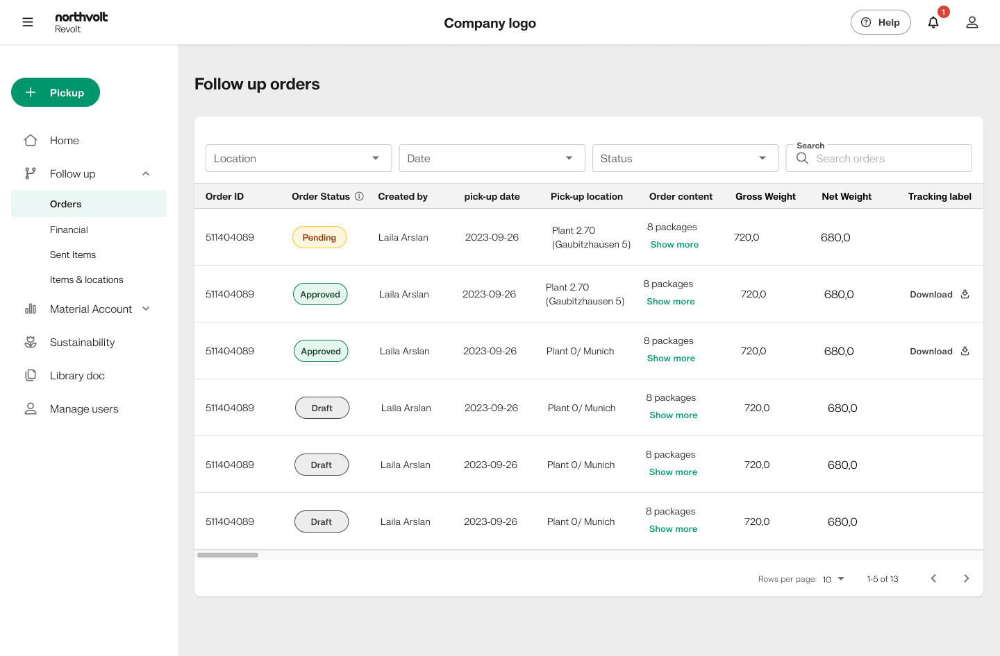
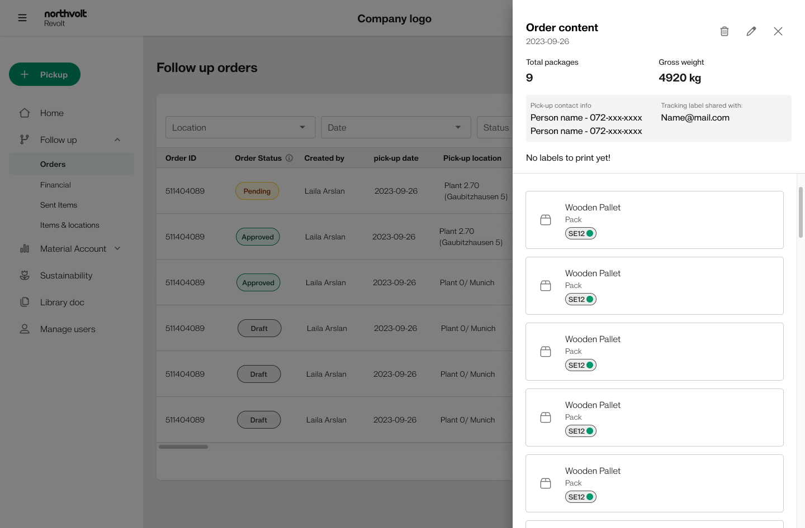

Revolt Customer Portal
A portal that makes a complex recycling service understandable, trackable & actionable.
A customer-facing portal for making a complex battery recycling service understandable, trackable and actionable. Northvolt Revolt recycles end-of-life batteries — an industrial service tangled in logistics, compliance and hazardous-material handling — and I designed the portal that turns that machinery into a guided experience business users can actually navigate.

Battery recycling is simple to say — and brutally complex to do.
Before a single screen, the service was a sprawl of moving parts owned by different teams. Customers saw none of it clearly — just scattered emails, unclear steps and no way to know what was happening with their batteries.

"We understood the process internally. Our customers never saw a clear version of it."
— Stakeholder interview, synthesis phaseThe moment the service became understandable.
I started with people, not screens — interviewing stakeholders across operations, sustainability and sales, then mapping every need onto the real service. The goal: separate what a customer needs to do from what the business needs to capture.

Customers managing shipments
Booking pick-ups and tracking requests, requirements and status from one place.
Internal support
Onboarding accounts and setting customers up behind the scenes.
Sustainability & reporting
Traceability and documents for compliance and impact reporting.
A sprawling service journey, resolved into a flow you can build.
This was the heart of the project. I mapped the desired end-to-end service for OEM customers — every stage, goal and need across the whole lifecycle — then resolved it into a clean, screen-by-screen task flow: the logic the whole portal is built on.


The interface stays calm, so the customer stays confident.
With the structure settled, the UI could do one thing at a time — clear status, requirements up front, and never asking the customer to understand the machinery behind it.





Testing didn't validate the design — it changed it.
I tested the prototype with representative users and let the findings drive the next iteration. Each thing they struggled with maps to a concrete change I made.
Users couldn't tell where their request was in the process.
Added a persistent status stepper on every screen, so the current stage and what's next are always visible.
Compliance requirements appeared too late, causing rework.
Surfaced requirements up front as a checklist at request creation, with inline guidance instead of post-submission errors.
Internal, industrial terminology confused non-expert users.
Rewrote labels in plain customer language and added short, contextual definitions for unavoidable technical terms.
No confirmation after key actions left users unsure it worked.
Added clear confirmation states and next-step prompts after every submission, closing the trust gap from research.
Not everything could be built at once — so we put trust first.
A MoSCoW model kept scope honest. The features that built customer trust in the very first interaction defined the MVP; everything else was sequenced by evidence, not opinion.
- Request a recycling pick-up
- Live status tracking
- Up-front requirements checklist
- Document upload & storage
- In-portal messaging
- Compliance reporting export
- Multi-site account view
- Sustainability impact dashboard
- Saved request templates
- Role-based permissions
- Public marketplace features
- Automated pricing engine
- Native mobile app
Read left to right: trust-building essentials come first, ambition deferred with intent. The strike-through items were deliberately ruled out of scope, not forgotten.
I turned an undefined, multi-stakeholder service into a structured portal concept — mapping needs, designing task flows, testing prototypes and prioritizing a focused MVP.
The hardest, most valuable work happened before any styling: sequencing a complex service into something a non-expert could trust and follow. That's the part of design I care about most.
Structure is the design
In complex B2B services, the real work is sequencing and clarity — long before visual polish.
Trust is built in steps
Visibility, confirmation and plain language did more for confidence than any single feature.
Prioritize by evidence
Research and testing — not opinion — decided what earned a place in the first release.